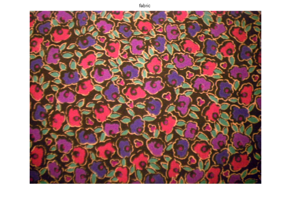
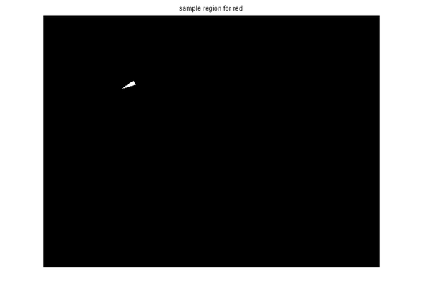
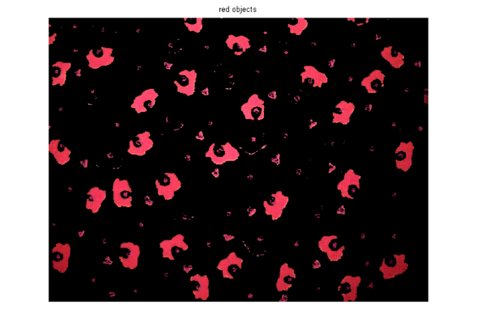
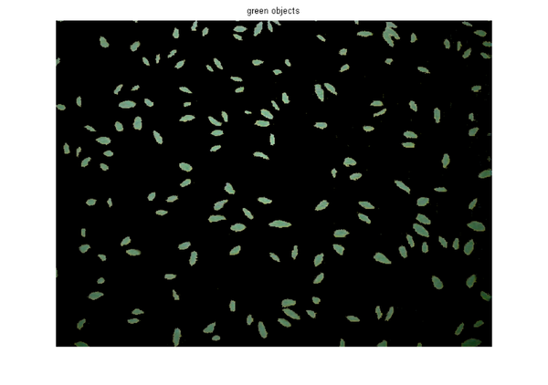
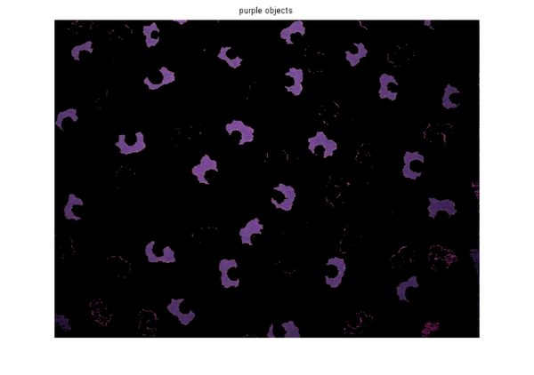
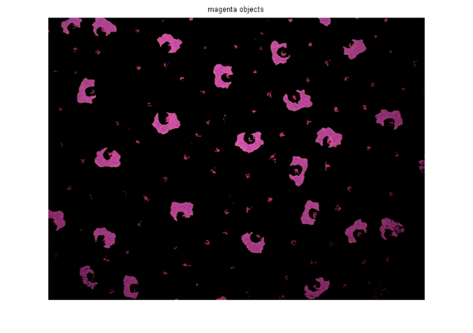
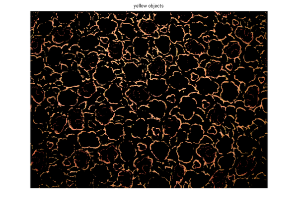
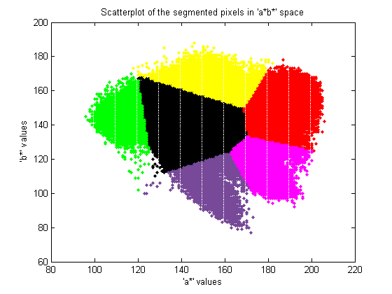

L*a*b* 色空間を使った色ベースの区分
目的は、L*a*b* 色空間を解析することで、繊維内の異なる色を識別することです。繊維イメージは、Image Acquisition Toolbox™ を使って収集されたものです。
目次
手順 1:イメージの読み込み
fabric.png イメージを読み込みます。これはカラフルな繊維のイメージです。fabric.png を使用する代わりに、Image Acquisition Toolbox の以下の関数を使用してイメージを読み込むこともできます。
% Access a Matrox(R) frame grabber attached to a Pulnix TMC-9700 camera, and % acquire data using an NTSC format. % vidobj = videoinput('matrox',1,'M_NTSC_RGB'); % Open a live preview window.Point camera onto a piece of colorful fabric. % preview(vidobj); % Capture one frame of data. % fabric = getsnapshot(vidobj); % imwrite(fabric,'fabric.png','png'); % Delete and clear associated variables. % delete(vidobj) % clear vidobj; fabric = imread('fabric.png'); figure(1), imshow(fabric), title('fabric');
手順 2:各領域の L*a*b* 色空間のサンプル色の計算
イメージ内には 6 つの主な色があります。背景色は赤、緑、紫、黄色、およびマゼンタです。これらの色を視覚的に簡単に区別できることに注目してください。L*a*b* 色空間 (CIELAB または CIE L*a*b*) を使用すると、このような視覚的差異を定量化できます。
L*a*b* 色空間は CIE XYZ 三刺激値から導出されます。L*a*b* 空間は、明度 'L*' または輝度レイヤー、色が赤-緑の軸に沿って低下する場所を示す色度レイヤー 'a*'、および色が青-黄の軸に沿って低下する場所を示す色度レイヤー 'b*' から構成されます。
色ごとに小さなサンプル領域を選択し、各サンプル領域の平均の色を 'a*b*' 空間で計算する方法をとります。これらの色マーカーを使用して、各ピクセルを分類します。
このデモを簡単にするために、MAT ファイルに保存される領域座標を読み込みます。
load regioncoordinates; nColors = 6; sample_regions = false([size(fabric,1) size(fabric,2) nColors]); for count = 1:nColors sample_regions(:,:,count) = roipoly(fabric,region_coordinates(:,1,count),... region_coordinates(:,2,count)); end imshow(sample_regions(:,:,2)),title('sample region for red');
繊維の RGB イメージを、makecform および applycform を使用して、L*a*b* イメージに変換します。
cform = makecform('srgb2lab');
lab_fabric = applycform(fabric,cform);
roipoly で抽出した領域ごとに、平均の 'a*' および 'b*' 値を計算します。これらの値は、'a*b*' 空間の色マーカーとして使用されます。
a = lab_fabric(:,:,2); b = lab_fabric(:,:,3); color_markers = repmat(0, [nColors, 2]); for count = 1:nColors color_markers(count,1) = mean2(a(sample_regions(:,:,count))); color_markers(count,2) = mean2(b(sample_regions(:,:,count))); end
たとえば、'a*b*' 空間での赤のサンプル領域の平均色は以下のようになります。
disp(sprintf('[%0.3f,%0.3f]',color_markers(2,1),color_markers(2,2)));
[198.183,149.722]
手順 3:最近傍ルールを使用した各ピクセルの分類
ここでは、各色マーカーは 'a*' および 'b*' 値を持っています。lab_fabric イメージ内の各ピクセルを分類するには、ピクセルと各色マーカーの間のユークリッド距離を計算します。最短距離は、ピクセルがその色マーカーに最も厳密に一致することを意味します。たとえば、ピクセルと赤の色マーカー間の距離が最小である場合、ピクセルは赤のピクセルとラベル付されます。
色ラベル (0 = 背景、1 = 赤、2 = 緑、3 = 紫、4 = マゼンタ、5 = 黄) を含んでいる配列を作成します。
color_labels = 0:nColors-1;
最近傍分類で使用される行列を初期化します。
a = double(a); b = double(b); distance = repmat(0,[size(a), nColors]);
分類を実行します。
for count = 1:nColors distance(:,:,count) = ( (a - color_markers(count,1)).^2 + ... (b - color_markers(count,2)).^2 ).^0.5; end [value, label] = min(distance,[],3); label = color_labels(label); clear value distance;
手順 4:最近傍分類の結果の表示
ラベル行列には、繊維イメージの各ピクセルの色ラベルが含まれています。ラベル行列を使用して、元の繊維イメージのオブジェクトを色分けします。
rgb_label = repmat(label,[1 1 3]); segmented_images = repmat(uint8(0),[size(fabric), nColors]); for count = 1:nColors color = fabric; color(rgb_label ~= color_labels(count)) = 0; segmented_images(:,:,:,count) = color; end imshow(segmented_images(:,:,:,2)), title('red objects');
imshow(segmented_images(:,:,:,3)), title('green objects');
 imshow(segmented_images(:,:,:,4)), title('purple objects');
 imshow(segmented_images(:,:,:,5)), title('magenta objects');
 imshow(segmented_images(:,:,:,6)), title('yellow objects');
 手順 5:ラベルの付いた色の 'a*' および 'b*' 値の表示
最近傍分類が、別の色に分類されたピクセルの 'a*' および 'b*' 値をプロットすることによって、さまざまな色の母集団を分類したことがよくわかります。表示のために、各点にその色ラベルを付けます。
purple = [119/255 73/255 152/255];
plot_labels = {'k', 'r', 'g', purple, 'm', 'y'};
figure
for count = 1:nColors
plot(a(label==count-1),b(label==count-1),'.','MarkerEdgeColor', ...
plot_labels{count}, 'MarkerFaceColor', plot_labels{count});
hold on;
end
title('Scatterplot of the segmented pixels in ''a*b*'' space');
xlabel('''a*'' values');
ylabel('''b*'' values');
